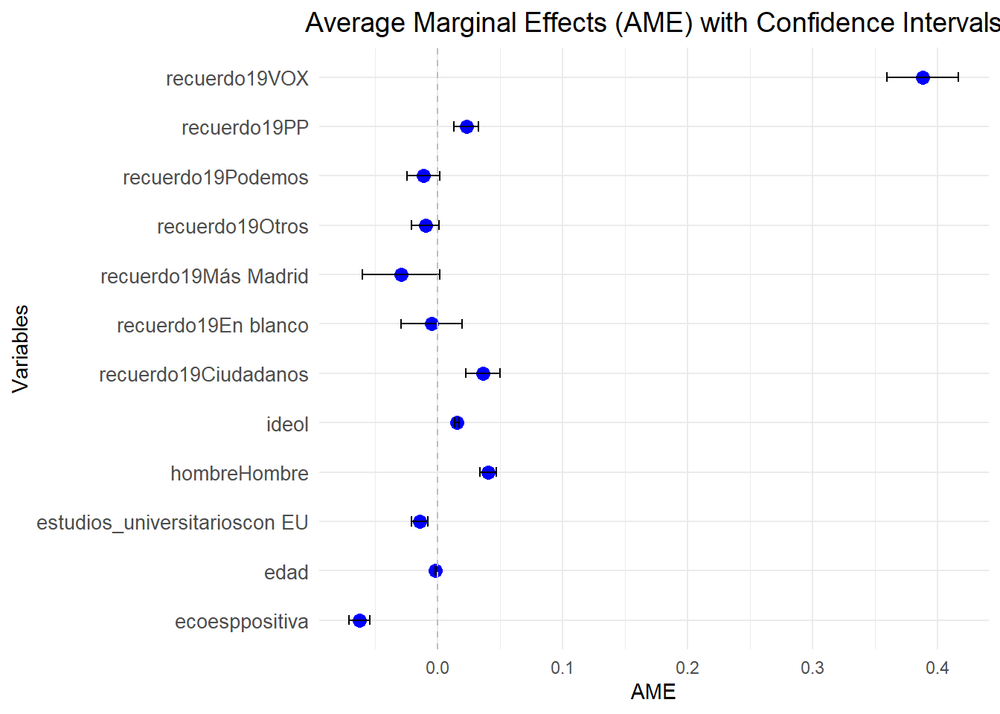
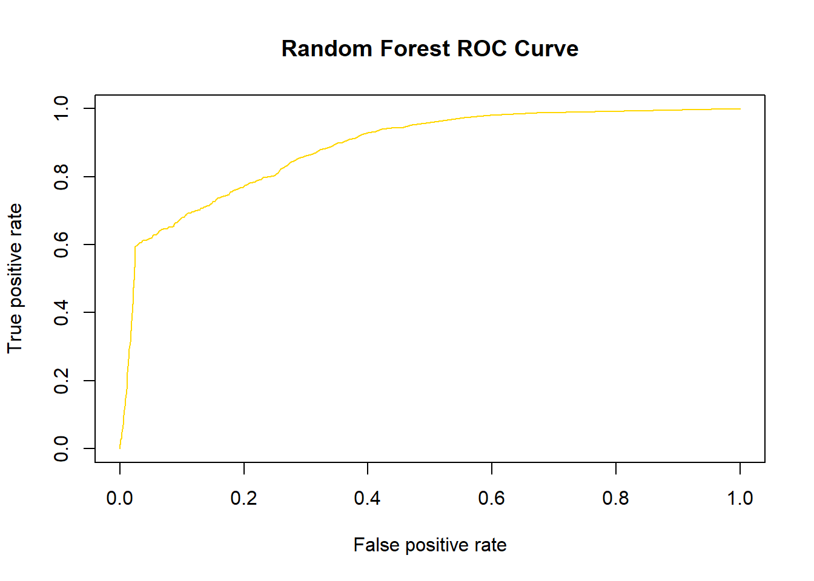
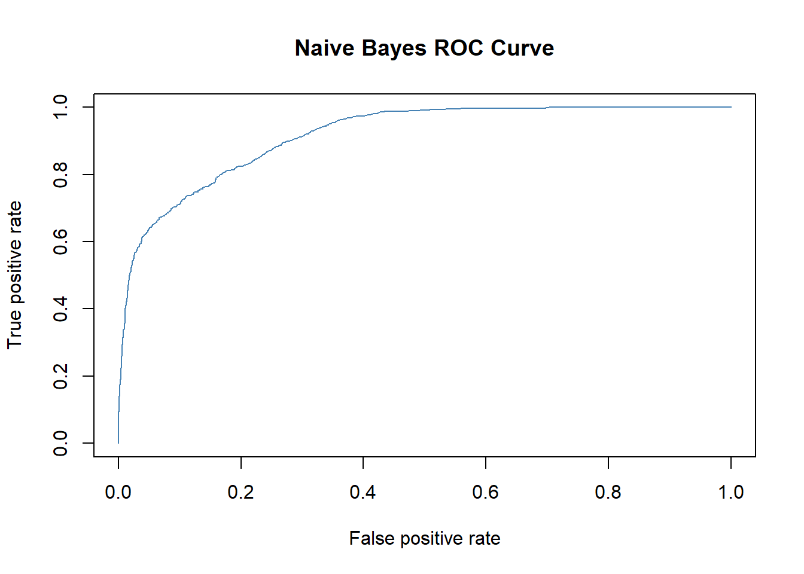
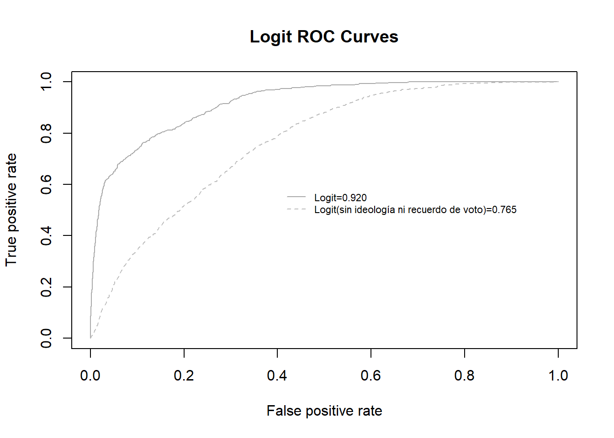

La clasificación supervisada es una tarea muy frecuente en todas las áreas de análisis de datos. Existe un gran número de algoritmos desarrollados tanto por la estadística (regresión logística, análisis discriminante) como por la inteligencia artificial (redes neuronales, árboles de decisión, redes bayesianas) diseñados para realizar las tareas propias de la clasificación.
Vamos a centrarnos en el análisis de regresión logística, una técnica para el análisis de variables dependientes categóricas con dos categorías (dicotómicas) o más (polinómicas). Sirve para modelar la probabilidad de ocurrencia de un evento como función de otros factores, y responder preguntas como:
¿Qué factores explican la victoria/derrota de un candidato en unas elecciones?
¿Qué variables determinan que una persona vote?
¿Qué factores incrementan/disminuyen el riesgo de caer en la pobreza?
¿Cómo podemos explicar el abandono escolar?
etc
El análisis de regresión logística pertenece al grupo de Modelos Lineales Generalizados (GLM por sus siglas en inglés), y usa como función de enlace la función logit.
Regresión logística vs regresión lineal
El modelo de regresión lineal no es válido cuando la variable respuesta no tiene una distribución normal. Por ejemplo: respuestas si/no, conteos, probabilidades, etc.
Al igual que la regresión lineal, la regresión logística busca:
predecir/explicar una VD a partir de una o mas VI,
medir el grado de relación de la VD con las VI
comprobar su significatividad
A diferencia de la regresión lineal:
los coeficientes de regresión se estiman por el procedimiento de Máxima Verosimilitud, que busca maximizar la probabilidad de ocurrencia del evento que se analiza
Supuestos básicos
Compartidos con la Regresión Lineal:
Tamaño muestral elevado
Introducción de VIs relevantes
Variables predictoras continuas o dicotómicas
Ausencia de colinealidad entre las VIs
Aditividad
Específicos:
No-linealidad: La función de vinculación logit es no-lineal. Esto implica que el cambio en la VD producido por el incremento de una unidad en la VI depende del valor que tome la variable. Es menos importante en los extremos de las VI, y mas importante en los valores centrales.
Heterocedasticidad: En regresión logística se asume heterocedasticidad (varianza de los residuos no constante). Es lo contrario que en la regresión lineal, ya que la representación de la regresión logística no es lineal, sino que se busca que debe existir varianza en los residuos no constante.
La ecuación de la regresión logística
La función de enlace logit, utilizada principalmente en modelos de regresión logística, es como hemos mencionado no lineal, ya que transforma una combinación lineal de predictores en probabilidades mediante la fórmula:
En esta ecuación, la VD aparece en una forma que no es directamente interpretable (concretamente, el logaritmo neperiano de la razón de probabilidades). Haciendo transformaciones, podemos expresar la probabilidad de ocurrencia del suceso de la siguiente manera:
Vamos a hacer un sencillo ejercicio de regresión logística usando los datos del la encuesta preelectoral CIS 2023. En concreto, vamos a estimar la probabilidad de que un individuo i tenga intención de votar a un parido p en las elecciones generales de 2023. Dado que se trata de un ejercicio de clase, vamos a incluir unas pocas variables y no vamos a tomar en consideración los casos perdidos (indecisos, etc). En consecuencia, los resultados no sirven para predicción electoral, solo practicar.
Como de costumbre, abrimos fichero “Limpieza de datos” en su versión más reciente.
A partir de la variable intención de voto (´INTENCIONG`), vamos a crear nuestra variable dependiente de intención voto VOX (intovox).
Como variables independientes, vamos a utilizar las variables “edad”, “hombre”, “estudios_universitarios”, “ecoesp”, “ideol” y “recuerdo19” que ya tenemos preparadas de clases anteriores. Una vez tenemos todas las variables preparadas, procedemos a crear el data.frame data con el conjunto de variables que vamos a incluir nuestros análisis y eliminamos los casos perdidos.
Que existan tantos casos perdidos en la variable dependiente (5772) no importa en este caso al ser un ejemplo, pero a la hora de hacer un modelo de predicción real se deberían imputar todos estos valores para que el modelo sea más fiable.
intvox hombre estudios_universitarios edad
Min. :0.0000 Mujer : 9373 sin EU:10482 Min. :21.00
1st Qu.:0.0000 Hombre:10475 con EU: 9366 1st Qu.:41.00
Median :0.0000 Median :53.00
Mean :0.1068 Mean :52.78
3rd Qu.:0.0000 3rd Qu.:65.00
Max. :1.0000 Max. :95.00
ecoesp ideol recuerdo19
negativa:12417 Min. : 1.000 PSOE :7104
positiva: 7431 1st Qu.: 3.000 PP :4557
Median : 5.000 Otros :2534
Mean : 4.817 Podemos :2292
3rd Qu.: 7.000 VOX :1648
Max. :10.000 Ciudadanos:1360
(Other) : 353
Estimación del modelo
Ya podemos estimar la regresión logística. De las 4 variables dependientes que tenemos, vamos a empezamos por calcular la probabilidad de votar a VOX frente a otros partidos, en función de la ideología, recuerdo de voto en 2019, opinión sobre la economía en España y perfil socio-demográfico de la persona. Usamos la función glm() con link function binominal.
library(MASS)m.vox <-glm(intvox ~ hombre + estudios_universitarios + edad + ecoesp + ideol + recuerdo19, data = datos_log, family ="binomial")summary(m.vox)
Call:
glm(formula = intvox ~ hombre + estudios_universitarios + edad +
ecoesp + ideol + recuerdo19, family = "binomial", data = datos_log)
Coefficients:
Estimate Std. Error z value Pr(>|z|)
(Intercept) -3.488087 0.164352 -21.223 < 2e-16 ***
hombreHombre 0.758371 0.064308 11.793 < 2e-16 ***
estudios_universitarioscon EU -0.266082 0.063597 -4.184 2.87e-05 ***
edad -0.027296 0.002093 -13.043 < 2e-16 ***
ecoesppositiva -1.352050 0.109386 -12.360 < 2e-16 ***
ideol 0.290559 0.016197 17.939 < 2e-16 ***
recuerdo19PP 0.478263 0.107785 4.437 9.11e-06 ***
recuerdo19VOX 3.378650 0.109928 30.735 < 2e-16 ***
recuerdo19Podemos -0.313977 0.206227 -1.522 0.128
recuerdo19Ciudadanos 0.693385 0.127396 5.443 5.25e-08 ***
recuerdo19Más Madrid -1.109060 1.011114 -1.097 0.273
recuerdo19Otros -0.266386 0.164990 -1.615 0.106
recuerdo19En blanco -0.123526 0.340733 -0.363 0.717
---
Signif. codes: 0 '***' 0.001 '**' 0.01 '*' 0.05 '.' 0.1 ' ' 1
(Dispersion parameter for binomial family taken to be 1)
Null deviance: 13484.3 on 19847 degrees of freedom
Residual deviance: 7595.5 on 19835 degrees of freedom
AIC: 7621.5
Number of Fisher Scoring iterations: 7
Significatividad de las variables
Al igual que en la regresión lineal, contrastamos las siguientes hipótesis:
H0:βi=0 -> la VIi no tiene efecto sobre la VD
Ha:βi!=0 ->la VIi sí tiene efecto sobre la VD
Como ya sabemos, podemos rechazar la hipótesis nula siempre que:
p-valor<0.05, NC:95%
p-valor<0.01, NC:99%
p-valor<0.001, NC:99.9%
Si además queremos calcular los intervalos de confianza, podemos usar la función cofint()
Los estimadores representan el logaritmo del cociente de probabilidades. Por ejemplo, ceteris paribus:
Ideología: Para cada punto que aumenta la ideología, el log de la probabilidad de votar a VOX (versus votar otro partido) aumenta en 0.290559.
Votó PP en 2019: el logaritmo de la probabilidad de votar a VOX en 2023 es 0.478263 mayor que entre los que en 2019 votaron al PP que entre los que votaron al PSOE (categoría de referencia).
Como se puede observar, esta interpretación de los coeficientes es muy poco intuitiva. Este tipo de coeficiente es útil si lo que nos interesa es conocer la dirección del efecto (signo positivo o negativo) y el nivel de significación (p-valor). Si por el contrario estamos interesados en interpretar el valor coeficiente, tenemos dos alternativas mejores: expresar los coeficientes como odds ratio o calcular las probabilidades de ocurrencia del evento.
Odds ratio
Con el oddsratio lo que hago es exponenciar el coeficiente, osea e exponencial de Beta: \(e^{\text{coef}}\) y es la frecuencia de ocurrencia de un suceso sobre la frecuencia de su no ocurrencia:
Odds ratio >1: la variable tiene un efecto positivo sobre la probabilidad de ocurrencia del suceso.
0 > Odds ratio <1: la variable tiene un efecto negativo sobre la probabilidad de ocurrencia del suceso.
Odds ratio =1: la variable no tiene efecto sobre la probabilidad de ocurrencia del suceso.
En la tabla:
Odds ratioideología=e0.290559=1.337. Para cada punto que nos movemos a la derecha en la escala de ideología, la probabilidad de votar a VOX (sobre votar a otro partido) aumenta en un factor de 1.337 (cuando el resto de variables permanecen constantes). O si se quiere expresar en porcentaje.
(1,337 - 1)* 100 = 0,337 * 100 = 33,7%
Sale 1,33, el cual es el mismo valor del coeficiente solo que ahora lo calcula las betas elevadas a \(e\) para desahacer el logaritmo neperiano.
Odds ratiovotó PP(2019)= e0.478263=1,61. La probabilidad de votar a VOX (sobre votar a otro partido) es 1,61 veces mayor entre las personas que en 2019 votaron al PP que entre las personas que en 2019 votaron al PSOE (cuando el resto de variables permanecen constantes). O si se quiere expresar en porcentaje.
(1,61 - 1)* 100 = 0,61 * 100 = 61%
En el caso de que el coeficiente sea negativo, como por ejemplo “opinión sobre la situación de la economía en España” haríamos así: Odds ratioecoesp=e-1.352050=0.259. En este caso, la probabilidad de votar a VOX es 0.259 veces menor entre las personas que consideran que la economía nacional va bien, que entre los que consideran que la economía nacional va mal (ceteris paribus). Expresado en porcentaje, sería:
(1 - 0.259)* 100 = 0.741 * 100 = 74%
Para obtener los coeficientes exponenciados usamos la función exp(): Con este código le estoy pidiendo los odds ratio porque le estoy pidiendo el exponente de los coeficientes de la regresión logística.
Para ponerlo todo en una tabla, usamos la función cbind (column bind), que nos permite unir la columna de los coeficientes y la de los intervalos de confianza.
Los odds ratio se pueden comparar entre sí para saber qué variable es más explicativa o está asociada de manera más fuerte con la VD. Pero OJO! Para comparar un odds ratio mayor que uno (relación positiva) con un odds ratio menor que uno (relación negativa), es necesario calcular el valor inverso de uno de los datos porque el rango es distinto. Por ejemplo:
ecoesp: 1/0,259=3,86
Cuando hacemos esto para poder comparar debemos tener en cuenta que este coeficiente es para la variable de referencia. En este caso 3,86 es para la economíanegativa, porque estamos dandole la vuelta al numerador y denominador.
La inversión de variables también es útil en el caso de las variables dicotómicas para comprobar el supuesto contrario al establecido. Por ejemplo, la probabilidad de las mujeres (en lugar del de los hombres) es de 1/2,13=0,47.
Se puede hacer para cualquier tipo de variable, en el caso de la categóricas se invierte a su variable de referencias, y en el caso de las de escala (como la variable ideologia) lo entendemos como el aumento de una unidad.
Probabilidades predichas
Como alternativa a los coeficientes y a los odds ratio se pueden calcular las probabilidades predichas. Las probabilidades predichas son la mejor manera de entender las variables de un modelo. Para calcularlas, primero debemos crear un data.frame con los valores que queremos que tomen las variables independientes en nuestras predicciones.
ideol recuerdo19 edad hombre estudios_universitarios ecoesp
1 4.816505 PSOE 52.77877 Hombre con EU negativa
2 4.816505 PP 52.77877 Hombre con EU negativa
3 4.816505 VOX 52.77877 Hombre con EU negativa
4 4.816505 Podemos 52.77877 Hombre con EU negativa
5 4.816505 Ciudadanos 52.77877 Hombre con EU negativa
6 4.816505 Más Madrid 52.77877 Hombre con EU negativa
7 4.816505 Otros 52.77877 Hombre con EU negativa
8 4.816505 En blanco 52.77877 Hombre con EU negativa
Este código predice con la media de ideología en la muestra en vez de con ideología = 5, para todos los recuerdos de voto, que esté en la media de edad de la muestra, que sea hombre, con estudios y con una opinión negativa para la economía.
Es importante que las variables en este data.frame tengan el mismo nombre que las variables en la regresión logística anterior. Una vez creado el data.frame, ya podemos pedirle a R que calcule las probabilidades predichas.
data1$probpredichas_vox<-predict(m.vox, newdata = data1, type ="response")data1[, c(2, 7)] #le pido que muestre todas las filas de las columnas 2 (recuerdo voto) y 7(probabilidad predicha)
recuerdo19 probpredichas_vox
1 PSOE 0.04578266
2 PP 0.07184266
3 VOX 0.58459468
4 Podemos 0.03386365
5 Ciudadanos 0.08757578
6 Más Madrid 0.01558029
7 Otros 0.03545569
8 En blanco 0.04067907
Los resultados muestran la probabilidad predicha de votar a VOX en 2023 para hombres con edad media, ideología media y con estudios universitarios, que opinan que la economía en España va mal, según el partido que habían votado en las elecciones anteriores.
Efectos marginales
El paquete margins responde a un intento de trasladar el comando “margins” de Stata a R, como un método genérico para calcular los efectos marginales -o efectos parciales- de las variables independientes. Por ejemplo, vamos calcular el efecto marginal de las VIs en nuestro modelo
También podemos representarlos gráficamente. El gráfico a continuación representa la columna AME (Average Marginal Effect) y las columnas low and upper (bandas de confianza inferior y superior).
# Convertimos el resumen en un data.frame para poder hacer un gráficodata_to_plot <-data.frame(factor = summary_margins$factor,AME = summary_margins$AME,lower = summary_margins$lower,upper = summary_margins$upper)
ggplot(data_to_plot, aes(x = AME, y = factor)) +geom_point(color ="blue", size =3) +# Puntos para los AMEgeom_errorbarh(aes(xmin = lower, xmax = upper), height =0.2, color ="black") +# Barras de errorgeom_vline(xintercept =0, linetype ="dashed", color ="grey") +# Línea vertical en 0labs(title ="Average Marginal Effects (AME) with Confidence Intervals",x ="AME",y ="Variables") +theme_minimal() +theme(plot.title =element_text(hjust =0.5, size =14), # Centrar títuloaxis.text.y =element_text(size =10)) # Ajustar tamaño de texto

Interpretación: Cuando se dice que un efecto marginal es 0.3882, significa que haber votado a VOX en 2019 está asociado con un aumento promedio de 0.17 unidades en la variable dependiente. En el contexto de una probabilidad o un porcentaje, como suele ser el caso en la regresión logística o modelos similares, un efecto marginal de 0.3882 corresponde a un aumento del 38,82 puntos porcentuales.
Para hacer un modelo robusto puedes elegir poner las variables con sus valores que conformarían el escenario mas adverso. El escenario que más desfavorece la hipótesis planteada.
Para más información sobre opciones del paquete margins podéis consultar aquí y aquí.
Resumen
La primera transformación es pasar el logaritmo al otro lado, es decir \(e^{\text{coef}}\) –> los odds ratios, porque al otro lado del igual queda \((\frac{p(x)}{1 - p(x)})\) , es decir la probabilidad del que el evento suceda partido de la probabilidad de que no suceda.
La última transfomación de la ecuación nos deja despejado \(p(x)\), de esta manera podemos hacer probabilidades predichas de x sustituyendo los betas y las x (como hacías valores predichos en lm). Como la distribución de la muestra no es lineal los efectos de x no son iguales a lo largo de todo y, de esta manera podemos calcular casos específicos de y. Podemos conocer a lo largo de la regresión la probabilidad de y para cada x seleccionada por nosotros.
Por último podemos calcular los AverageMarginalEffects (margins en Stata). El efecto marginal no es la probabilidad de ocurrencia de x, sino el fecto de la VI sobre la probabilidad de ocurrencia de x. Es la manera de conseguir el equivalente a los coeficientes de la regresión lineal porque calcular todas las y para ciertos valores de x y luego hace el promedio de esos impactos de la x. En el caso de lineales no hace falta transformar nada porque la media del efectos de una VI sobre todos los valores de y es igual a el efecto de de VI sobre un solo valor de y porque es un efecto estable a lo largo de toda la regresión.
AME se usa principalmente cuando tienes un interés particular por el efecto de una VI.
Todos los valores están por debajo de 5. No parece que existan problemas de multicolinealidad
Heterocedasticidad
library(lmtest)logit.het<-bptest(m.vox)logit.het
studentized Breusch-Pagan test
data: m.vox
BP = 2273.9, df = 12, p-value < 2.2e-16
La hipótesis nula en este test es que la varianza de los residuos es constante. La evidencia permite rechazar la hipótesis nula, confirmando que se cumple el supuesto de heterocedasticidad (que es lo que buscamos).
A continuación, vamos examinar cómo de bueno/malo es nuestro modelo a la hora de clasificar datos nuevos. Para ello, continuamos con el ejemplo anterior, en el que estimábamos la probabilidad de que un individiuo vote a un determinado partido. Se llama clasficación porque estoy intentado clasificar a los individuos en función de los valores de la VD, que en este caso es 0 y 1.
En primer lugar, creamos el conjunto de entrenamiento (60%) y test (40%). Como hay pocos 1 en la muestra (de la var dependiente), se amplia el % de casos destinados al test para evitar que dentro de este la proporción de 1 sea demasiado bajo como para comprobar el modelo.Se saca una muestra aleatoria y por eso ponermos el seed, para que nos escoja los mismos datos aleatorios y sea replicable.
Creamos la variable clase_real, que corresponde a la variable dependiente (intentación voto a VOX) en el conjunto de test. Es la variable que luego comparemos con los valores estimados para ver nuestro nivel de acierto/error:
clase_real <- test.data$intvox
Entrenamos el modelo (intención de voto a VOX) con los datos del train.data:
library(MASS)logit.vox <-glm(intvox ~ hombre + estudios_universitarios + edad + ecoesp + ideol + recuerdo19, data = train.data, family ="binomial")summary(logit.vox)
Call:
glm(formula = intvox ~ hombre + estudios_universitarios + edad +
ecoesp + ideol + recuerdo19, family = "binomial", data = train.data)
Coefficients:
Estimate Std. Error z value Pr(>|z|)
(Intercept) -2.647381 0.223754 -11.832 < 2e-16 ***
hombreHombre 0.514395 0.091050 5.650 1.61e-08 ***
estudios_universitarioscon EU -0.201434 0.089109 -2.261 0.023788 *
edad -0.019516 0.002758 -7.077 1.47e-12 ***
ecoesppositiva -1.382171 0.133390 -10.362 < 2e-16 ***
ideol 0.203899 0.021920 9.302 < 2e-16 ***
recuerdo19PP 0.952857 0.142989 6.664 2.67e-11 ***
recuerdo19VOX 2.713181 0.147704 18.369 < 2e-16 ***
recuerdo19Podemos -0.421267 0.245799 -1.714 0.086553 .
recuerdo19Ciudadanos 0.585503 0.168807 3.468 0.000523 ***
recuerdo19Más Madrid -1.237565 1.017536 -1.216 0.223895
recuerdo19Otros -0.600585 0.217137 -2.766 0.005676 **
recuerdo19En blanco -0.948500 0.526124 -1.803 0.071418 .
---
Signif. codes: 0 '***' 0.001 '**' 0.01 '*' 0.05 '.' 0.1 ' ' 1
(Dispersion parameter for binomial family taken to be 1)
Null deviance: 5182.6 on 5941 degrees of freedom
Residual deviance: 3442.7 on 5929 degrees of freedom
AIC: 3468.7
Number of Fisher Scoring iterations: 6
Después, calculamos los valores predichos en el conjunto de test. Estos son los valores que luego vamos a comparar con la “clase real”:
Para valorar cómo de bien/mal clasifica nuestro modelo, vamos a calcular la curva ROC(Receiver operating characteristics) y el AUC (Area under the curve). Cuando hacemos una clasificación binaria, existen 4 tipos de resultados posibles:
True negative (TN): predecimos 0 y la clase real es 0
False negative (FN): predecimos 0 y la clase real es 1
True positive (TP): predecimos 1 y la clase real es 1
False positive (FP): predecimos 1 y la clase real es 0
A partir de estos resultados se construye la matriz de confusión:
La matriz de confusión sive para calcular la curva ROC, que es la representación gráfico de la razón de Verdaderos Positivos (TPR) frente a la razón de falsos positivos (FPR):
Razón de verdaderos positivos (TPR - true positive rate): proporción de positivos reales que son correctamente identificados como positivos por el modelo. También se le conoce como sensibilidad o recall. Se calcula como:
\[
TPR = \frac{TP}{TP + FN}
\]
Razón de falsos positivos (FPR - false positive rate) = proporción de negativos reales que son incorrectamente identificados como positivos por el modelo. Se calcula como:
\[
FPR = \frac{FP}{FP + TN}
\]
Gráficamente, el espacio ROC se representa de la siguiente manera:
Lo ideal es encontrar una curva que se acerque lo máximo posible al punto de clasificación perfecta. Si está en la línea, los resultados de la predicción son completamente aleatorios, y si está por debajo de esta el modelo predice aún peor que asignar cifras al azar.
Esto se interpreta en función del area que hay debajo de la línea, lo ideal es que el area sea 1 (100%) es decir, que todo lo ha clasificado bien.
Calculamos el area bajo la curva (AUC). El AUC (Área Bajo la Curva) es una métrica que mide el desempeño de un modelo de clasificación binaria. Un valor de AUC:
1.0: El modelo clasifica perfectamente todas las instancias
0.5: El modelo no tiene poder predictivo (es como adivinar al azar)
En nuestro caso, AUC=0.920. Este valor indica que nuestro modelo clasifica bien en un 92% por de los casos.
Nota: AUC es un S4 object system, por eso las consultas de sus elementos son un poco diferentes a lo que hemos visto hasta ahora. Nosotros no vamos a entrar en esto, pero si teneís curiosidad podéis leer este capítulo del libro de Hadley Wickham.
Comparación de modelos
Normalmente, la curva ROC se utiliza para comparar la precisión de diferentes algoritmos de clasificación (como regresión logística, Naive Bayes, Random Forest, LDA, etc). Aunque en nuestro caso solo hemos trabajado con regresión logística, vamos a estimar diferentes modelos a modo de ejemplo, pero sin profundizar en los detalles de su funcionamiento.
library(randomForest)# Convertimos la variable intvoto en factor (de lo contrario, da error)train.data$intvox <-as.factor(train.data$intvox)test.data$intvox <-as.factor(test.data$intvox)# Entrenamos el modelo Random Forest rf.vox <-randomForest( intvox ~ hombre + estudios_universitarios + edad + ecoesp + ideol + recuerdo19,data = train.data,ntree =500, # número de árbolesmtry =2, # número de predictores seleccionados aleatoriamente por árbolimportance =TRUE# importancia de variables)# Importancia de las variablesimportance(rf.vox)
Le indicamos que haga 500 arboles; mtry es el número de predictores seecionados aleatoriamente. Importance indica que en los 500 arboles que variables han tenido más peso de manera sistemática en todos los modelos. Este valor no lo puedes interpretar pero te hace un ranking, cuanto más altos mejor (Accuracy y Gini). En vez de conocer la significatividad estadística tienemos la importancia de las variables en el modelo. El random forest va apartando poco a pode preditores que no sean relevantes para el modelo, según va haciendo los modelos de manera altearia.
Cuanto mayor es el número dentro del Accuracy, más relevante es esa variable dentro de la predicción. Que una variable sea más importante que otra no implica que sea mejor, ya que al no tener ninguna medida como el p-valor no se puede saber si la variable es significativa o no. Por tanto, que una variable sea más importante no la hace relevante en sí.
En este modelo el type se llama “prob” y luego si entre corchetes se pone [1] clasifica sobre los 0 y [,2] quiere decir que clasifica sobre los 1.
# Calculamos los valores predichos en el conjunto de testpredicted_rf <-predict(rf.vox, newdata = test.data, type ="prob")[, 2]# Creamos el objeto de predicción para ROCpred_rf <-prediction(predicted_rf, clase_real) # valores predichos, valores reales# Calculamos rendimiento (ROC)perf_rf <-performance(pred_rf, measure ="tpr", x.measure ="fpr")# Pintamos la curva ROCpar(mfrow =c(1,1)) plot(perf_rf, lty =1, col ="gold", main ="Random Forest ROC Curve")

# Calculamos el AUCauc.rf<-performance(pred_rf, measure ="auc", x.measure ="fpr") auc.rf@y.values
[[1]]
[1] 0.8862379
En este caso, AUC es de 88,7%. Esto indica que en el 87% de los casos, el modelo clasifica correctamente.
Modelo de clasificación Naive Bayes
Repetimos el proceso con el algoritmo Naive Bayes (misma filosofía que un modelo bayesiano pero es otro modelo de clasificación).
library(e1071) # Entrenamos el modelo Naive Bayes nb_model <-naiveBayes( intvox ~ hombre + estudios_universitarios + edad + ecoesp + ideol + recuerdo19, data = train.data)# Calculamos los valores predichos en el conjunto de testpredicted_nb <-predict(nb_model, newdata = test.data, type ="raw")[, 2] # raw en esta librería equivale a prob en la de random.forest# Creamos el objeto de predicción para ROCpred_nb <-prediction(predicted_nb, clase_real) #comparar datos predichos con reales# Calculamos el rendimiento (ROC)perf_nb <-performance(pred_nb, measure ="tpr", x.measure ="fpr")# Pintamos la curva ROCpar(mfrow =c(1,1)) # Configuración de un solo gráficoplot(perf_nb, lty =1, col ="steelblue", main ="Naive Bayes ROC Curve")

# Calculamos el AUCauc.nb<-performance(pred_nb, measure ="auc", x.measure ="fpr") auc.nb@y.values
[[1]]
[1] 0.9161327
En este caso, el porcentaje de casos correctamente clasificados es 91,6%.
Para tener una visión global vamos a representar todas las curvas ROC de manera conjunta. Esto nos permite comparar los resultados de los tres algoritmos:
Es importante recordar que nuestros modelos sólo están teniendo en consideración a los individuos que han respondido a todas las preguntas incluidas en el modelo. De esta manera, estamos dejando fuera a muchos entrevistados que no ofrecen información sobre alguna de las variables, particularmente, ideología y recuerdo. Esto genera un importante sesgo. ¿Sería mejor dejar estas variables fuera? A modo de ejemplo, vamos a ver cuál hubiera sido el resultado de no haber incluido información sobre esas variables. Repitamos nuestro modelo original, esta vez excluyendo ideología y recuerdo de voto en el 2019.
# Modelo sin ideología ni recuerdo de votologit2.vox <-glm(intvox ~ hombre + estudios_universitarios + edad + ecoesp, data = train.data, family ="binomial")# Predicciónpredicted_logit2<-predict(logit2.vox, newdata=test.data, type="response")# ROCpred_logit2 <-prediction(predicted_logit2, clase_real)perf_logit2<-performance(pred_logit2, measure ="tpr", x.measure ="fpr") # AUCauc.logit2 <-performance(pred_logit2, measure ="auc", x.measure ="fpr") auc.logit2@y.values
[[1]]
[1] 0.7653978
La AUC en este caso es considerablemente más baja. Comparamos ambos modelos gráficamente:
par(mfrow =c(1,1))plot(perf_logit, lty=1, col="darkgrey", main ="Logit ROC Curves")plot(perf_logit2, lty=2, col="grey", add =TRUE)legend(0.4, 0.6, c("Logit=0.920", "Logit(sin ideología ni recuerdo de voto)=0.765"), lty =c(1,2), bty ="n",col=c("darkgrey", "grey"),cex =0.7)

Como se puede observar en el gráfico arriba, la predicción es mucho peor cuando no disponemos de información sobre ideología y recuerdo de voto. Una alternativa sería imputar los valores perdidos en las variables que tienen un número elevado de NA antes de hacer la regresión.
Mejora de modelos
Vamos a explorar qué ocurre si tomamos en consideración que algunas variables pueden no tener un efecto lineal. Por ejemplo, la edad. Sabemos por otros estudios que el perfil de edad de los votantes de Vox es diverso, pero el partido tiene un respaldo importante entre votantes de mediana edad (35-54 años). Para tomar en cuenta esto, vamos a elevar ambos la variable edad al cuadrado. Recordad que siempre hay que incluir el efecto principal y el cuadrático
Call:
glm(formula = intvox ~ hombre + estudios_universitarios + edad +
I(edad^2) + ecoesp + ideol + recuerdo19, family = "binomial",
data = train.data)
Coefficients:
Estimate Std. Error z value Pr(>|z|)
(Intercept) -3.9443595 0.4471310 -8.821 < 2e-16 ***
hombreHombre 0.5160163 0.0912237 5.657 1.54e-08 ***
estudios_universitarioscon EU -0.2110982 0.0891749 -2.367 0.017921 *
edad 0.0361276 0.0166679 2.167 0.030197 *
I(edad^2) -0.0005431 0.0001611 -3.372 0.000747 ***
ecoesppositiva -1.3912122 0.1335494 -10.417 < 2e-16 ***
ideol 0.2082346 0.0220012 9.465 < 2e-16 ***
recuerdo19PP 0.9575919 0.1427256 6.709 1.96e-11 ***
recuerdo19VOX 2.6741532 0.1477779 18.096 < 2e-16 ***
recuerdo19Podemos -0.4081878 0.2457836 -1.661 0.096761 .
recuerdo19Ciudadanos 0.5629760 0.1688350 3.334 0.000855 ***
recuerdo19Más Madrid -1.1715752 1.0172350 -1.152 0.249434
recuerdo19Otros -0.6173077 0.2172718 -2.841 0.004495 **
recuerdo19En blanco -0.9736638 0.5261391 -1.851 0.064230 .
---
Signif. codes: 0 '***' 0.001 '**' 0.01 '*' 0.05 '.' 0.1 ' ' 1
(Dispersion parameter for binomial family taken to be 1)
Null deviance: 5182.6 on 5941 degrees of freedom
Residual deviance: 3430.9 on 5928 degrees of freedom
AIC: 3458.9
Number of Fisher Scoring iterations: 6
En nuestro modelo, el efecto principal es positivo, y el cuadrático es negativo. Además, ambos son estadísticamente significativos. La combinación de estos efectos sugiere que la relación entre la variable independiente y la dependiente tiene forma de “U” invertida: La variable dependiente aumenta hasta cierto punto (el máximo) y luego comienza a disminuir.
En este post se explica bastante bien la relación entre signos del efecto principal y cuadrático y la forma del efecto